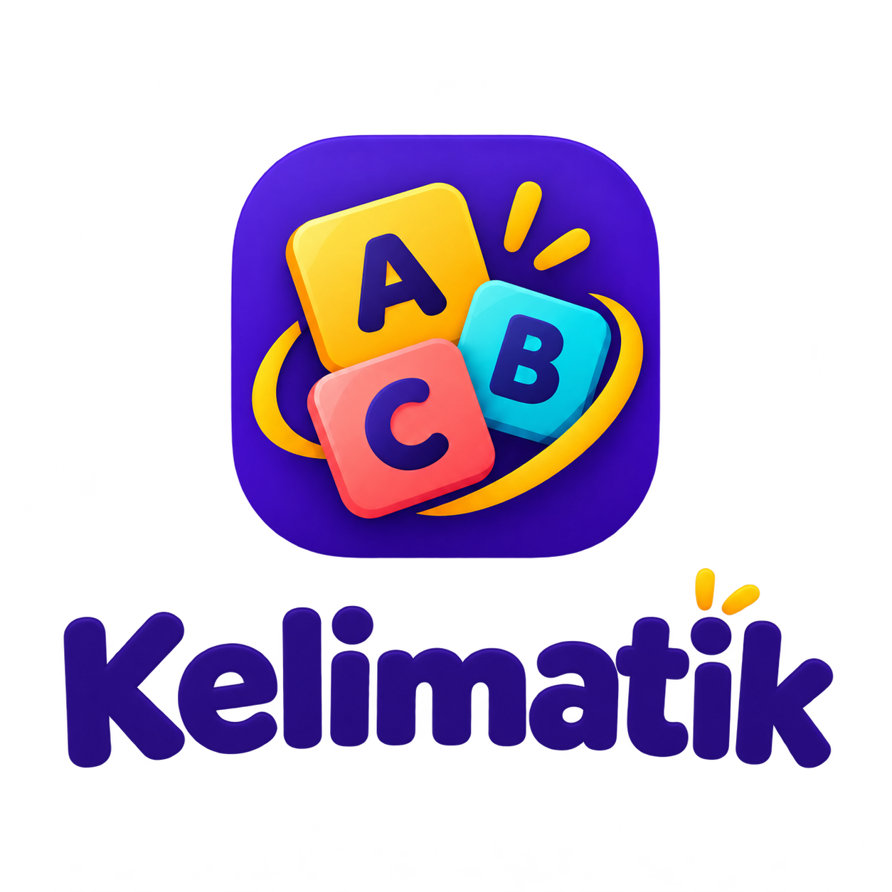

YAPIOZ UYGULAMALARI
Kelimatik
Gizlilik Politikası
Kelimatik, kelime setleriyle dil pratiği yapmanızı sağlar. Uygulama hesap oluşturmanızı istemez.
Saklanan bilgiler
Android dosya seçicisinde seçtiğiniz CSV dosyası okunur. İçe aktarılan setin adı, kelimeler ve doğru veya yanlış cevap geçmişi cihazdaki uygulama veritabanında saklanır. Bu bilgiler oyunları hazırlamak ve kelime tekrarlarını düzenlemek için kullanılır.
Paylaşım ve üçüncü taraflar
Kelimatik kelime setlerini ve cevap geçmişini YAPIOZ'a veya üçüncü taraflara göndermez. Android, cihaz ve hesap ayarlarınıza bağlı olarak uygulama verilerini yedekleyebilir veya başka bir cihaza taşıyabilir. Bu işlemleri Android yönetir.
Dosya erişimi
Kelimatik, içe aktarma sırasında Android dosya seçicisiyle seçtiğiniz CSV dosyasını okur.
Saklama ve silme
Kelime setini uygulama içinden silebilirsiniz. Yerel uygulama verilerini silmek için Android ayarlarından Kelimatik’in verilerini temizleyebilir veya uygulamayı kaldırabilirsiniz. Bu işlemler özgün CSV dosyasını silmez. Sistem yedeklerini Android ve hesap ayarlarınızdan yönetebilirsiniz.
Destek
Bize e-posta gönderirseniz iletinizde paylaştığınız bilgileri talebinizi yanıtlamak için kullanırız. Destek yazışmaları Gmail üzerinden işlenir.
Değişiklikler
Uygulamanın veri işleme biçimi değişirse bu politika güncellenir. Sorularınız için destek e-postası gönderin.